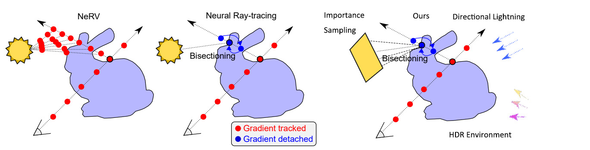

CS 184: Computer Graphics and Imaging, Spring 2023
Final Project Proposals: Nerf Pathtracer with diverse lighting

Overview
We will introduce NRTL, Neural RayTracing with diverse Lighting, which extend the relighting capability of Neural RayTracing from point light to more a more diverse set of lights including area lights and directional lights.
Problem Description
Neural Radiance Fields is a new technique that replaces certain components of 3D reconstruction algorithms with neural networks. It has been shown to be effective in reconstructing 3D scenes and rendering novel views in real time. However, existing techniques suffer from lack of robustness and are sensitive to variations in lighting conditions. Neural Ray Tracing [1] addresses this problem by combining NERF representation of a scene with traditional path-tracing algorithms to ground the rendering process of novel views and lightning conditions. In the experiment of the original paper, the author only explored relighting by adding and moving around point lights. We aim to explore the full potential of this method and introduce alternative lighting such as area light and directional light which are common in typical 3D scenes.
Goals and Ojectives
Our goal is to qualitatively improve the Neural Ray Tracing method by considering area and directional lighting. The deliverables will include the code of our implementation, images and 360 videos comparing our result versus that of Neural Ray Tracing.
Define how you will measure the quality / performance of your system (e.g. graphs showing speedup, or quantifying accuracy).
We will qualitatively and quantitatively compare our results with those presented in the Knodt et al. paper. For quantitative comparisons, we will use the same metrics, PSNR and MS-SSIM, as presented in the paper.
What we plan to achieve Adapt Neural Ray Tracing with “area lighting” and fine-tune the NeRF model for desirable results, ideally prevailing the previous method.
What we hope to achieve if time allows: Adapt and fine-tune Neural Ray Tracing with “directional lighting”.
Schedules
Week of Apr 10th:
Familiarize ourselves with the codebase of Neural Ray Tracing and reproduce their results. Start coding to adapt the existing model for area lighting.
Week of Apr 17th:
Train our model with area lighting. Implement the directional lighting module.
Week of Apr 24th:
Train both models with different lightings. Tune for better results.
Week of Apr 31st:
Buffer for overflowing action items (e.g. if training result was suboptimal).
Resources
Our computation resources consisting of more than 16 Nvidia GPUs including 4 A100. We plan to work on an existing Nerual Ray Tracing codebase based on pytorch framework.
References
[1]J. Knodt, J. Bartusek, S.-H. Baek, and F. Heide, “Neural ray-tracing: Learning surfaces and reflectance for relighting and view synthesis,” arXiv preprint arXiv:2104.13562, 2021.